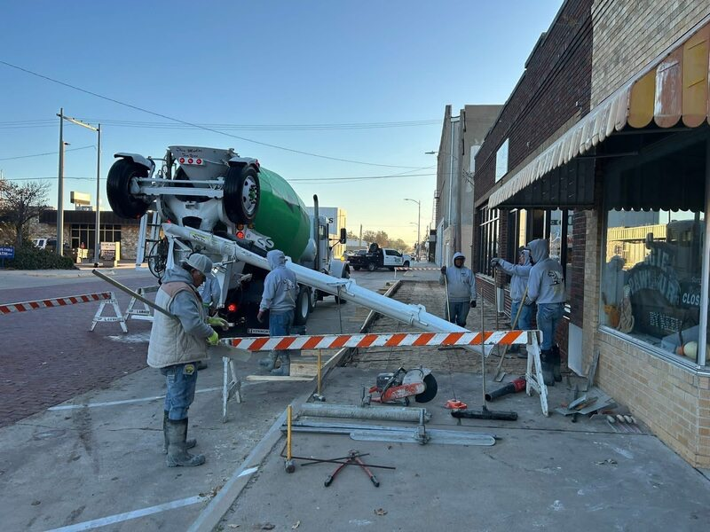
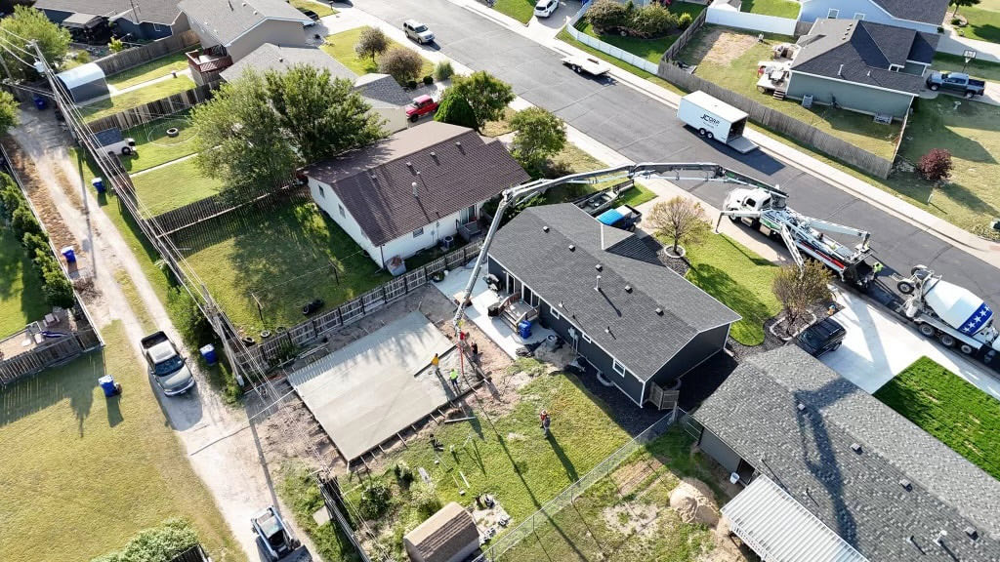
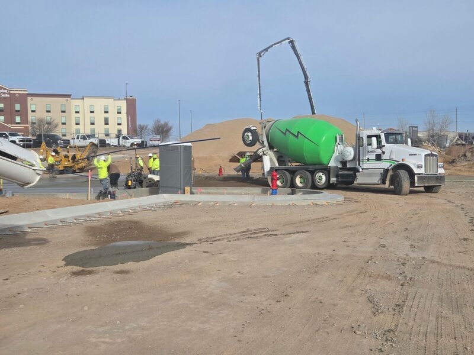
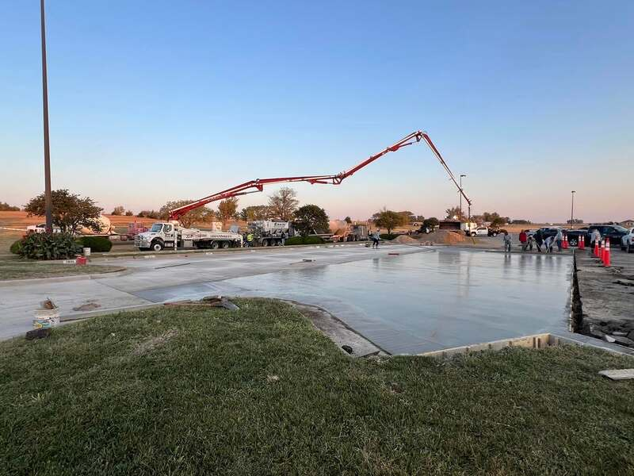
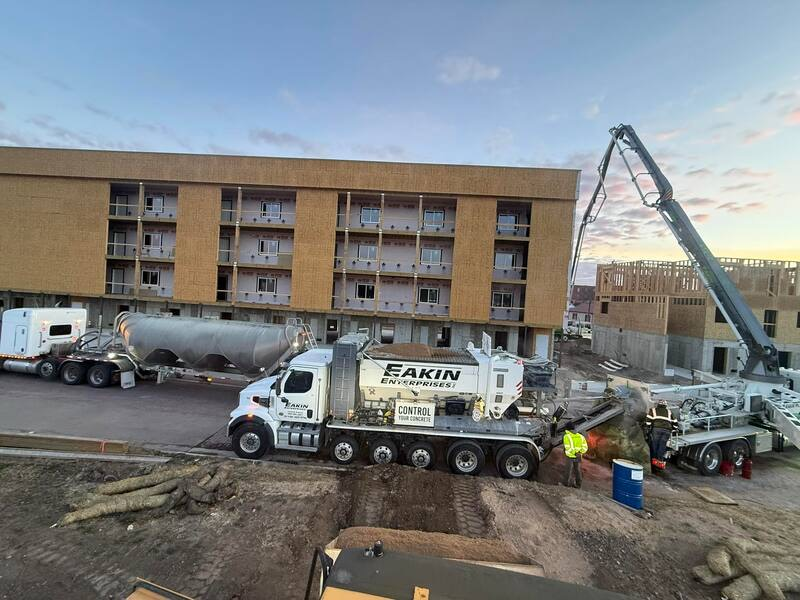
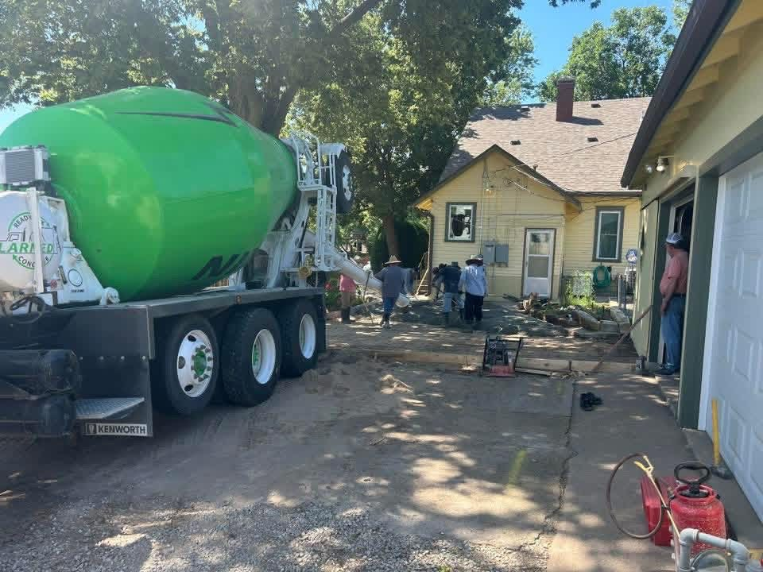
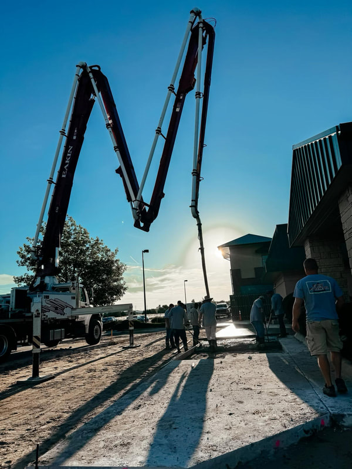
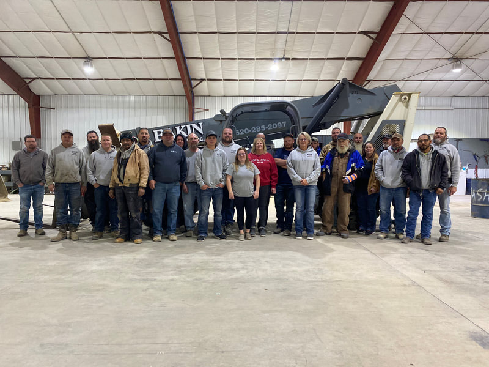

01
Driveways & flatwork
Driveways, sidewalks, pads, patios and parking lots for homes, businesses and towns.
- Driveways
- Sidewalks
- Parking lots
- Pads
- Patios

Commercial and residential concrete from the Eakin family, with our own sand and gravel, ready mix, volumetric trucks and concrete pumps behind every pour.
Our concrete crew does professional commercial and residential work: sidewalks, parking lots, driveways, foundations, retaining walls, basements, pools, pads and patios, plus the excavation and dirt work that comes first.

Driveways, sidewalks, pads, patios and parking lots for homes, businesses and towns.

Excavation, footings, foundations, basements and retaining walls, poured with our own pumps or Telebelt where access is tight.

Add polish and class to your patio or porch. Hundreds of design and color combinations make it one of a kind.
Sand and gravel, ready mix, volumetric trucks, pumps and the crew that finishes the job all come from the same Larned family business.
Mixes based on what actually holds up in the field. In the family since 1957.
Order concreteTwo Alliance pumps and a Putzmeister Telebelt for tight access and big pours.
PlacementForming, placing and finishing driveways, slabs, foundations and stamped work.
Get a price
When the truck can’t get close, the boom can. Our pumps handle tight-access residential work, walls and decks as well as large commercial pours.
Schedule a pump: Adolfo, (620) 285-8790
Photos from our crews across central and western Kansas.








Willis and Wanda Eakin, Chad’s grandparents, founded the business in 1950. Before moving to Larned they leased a sandpit in Dodge City. In Larned they ran it with their two sons, Wendell (Chad’s father) and Nolan.
Chad helped out in high school and started his own construction business. In 2001 he opened the Great Bend location on Railroad Avenue. Today Eakin Enterprises, Eakin Placement and Eakin Transport are owned and operated by Chad, Brock and Shabree Eakin, with the main office still at 111 Main Street in Larned.
“Customer service is very important to us and going that extra mile for our customers makes a huge difference.”Chad Eakin
Call the office that fits your job, or send the form and we’ll get back to you.